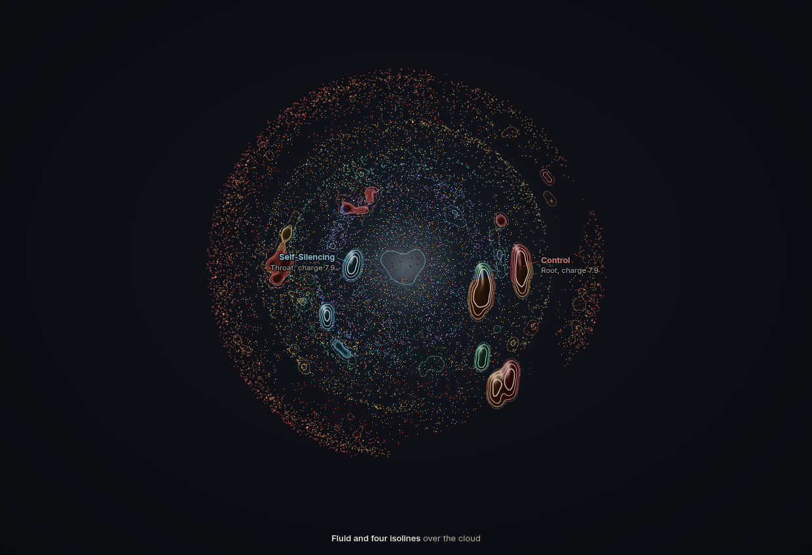
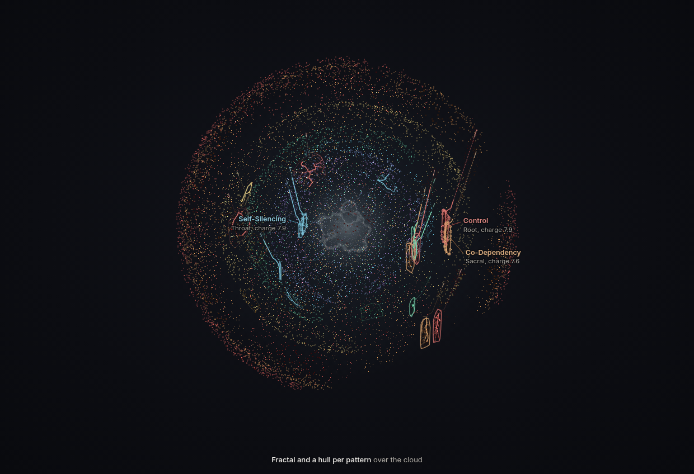
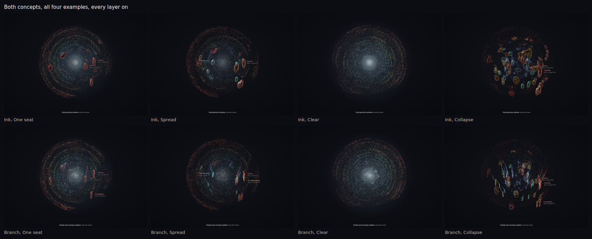
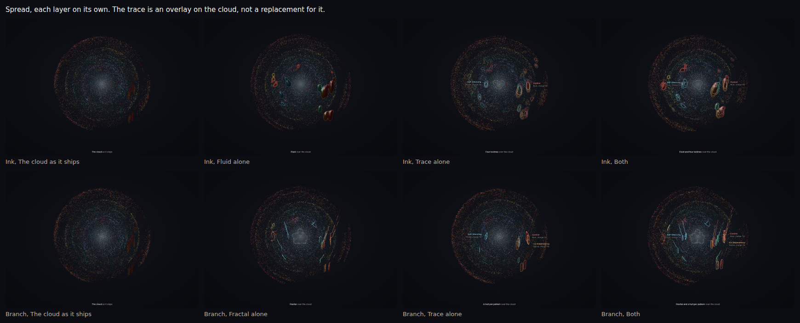
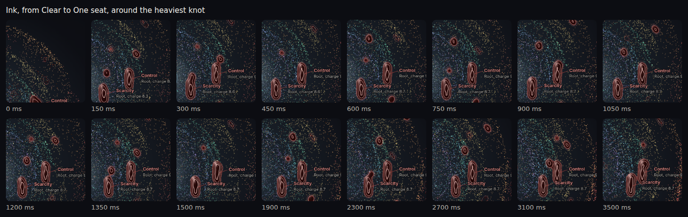
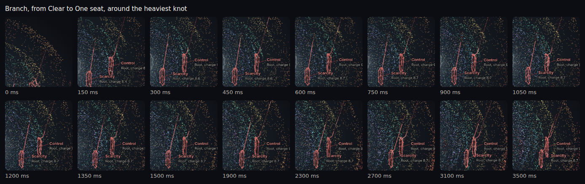
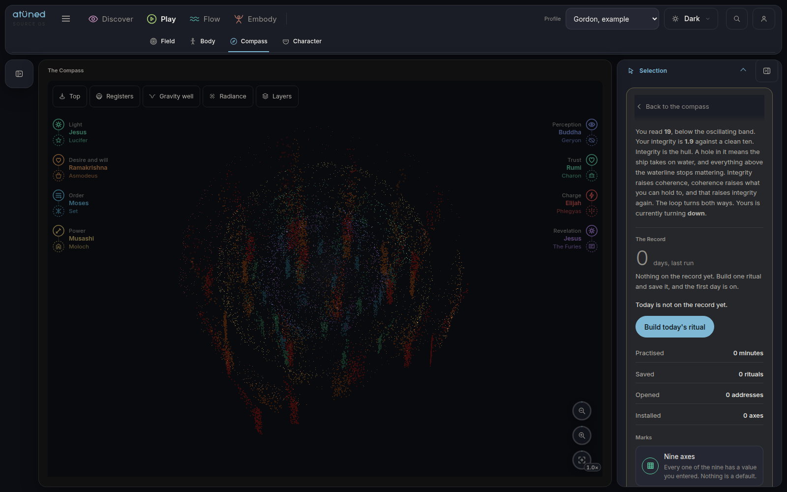

Two ways to trace the cloud and thicken it
The ask: an overlay that traces the geometric volume of the patterns, and the places where the points crowd made to look more fluid or more fractal. The point cloud is the Registers view on the Compass. Each mockup below carries both asks at once, as a finished direction. Both read the same toy numbers, so pressing an example or dragging a seat’s charge moves them the same way.
Mockups only. Nothing here reads a profile or touches the app. On either page, keys 1 to 4 pick an example and C cycles them. P switches the points, T the trace, and F or R the medium.
The two directions
Shown on Spread, four seats near five. Each layer is a switch on top of the points, never in place of them.

Ink
Where fallen matter crowds, the points give way to one body of dark liquid. Knots that come close fuse. A drop gathers on the shell, lets go and falls into its pool.
The trace is four isolines of the whole fall, like a pressure map: dotted where matter starts to gather, brightest where it is thickest.
Open ink
Branch
Every falling pattern grows a branching skeleton through its own fallen points, so the more points, the finer it forks. The ball of light gets a fractal coastline.
The trace outlines each pattern’s volume on its own, with the line it fell along. The three heaviest are named.
Open branchAll four examples
One seat loads Root alone, so its heaviest knots, its part fallen addresses and its sparse drops sit on one screen. Spread loads four seats. Clear carries almost nothing, so only the ball of light crowds. Collapse puts every seat past six.

Each layer on its own
The first column is the cloud as it ships. The trace and the medium each switch on alone, then together.

In motion
From Clear to One seat, cropped around the heaviest knot. Ink drips: two drops per address every 3.6 seconds, slow off the shell and fast into the pool. Branch grows as the matter lands, and a band of charge runs down each tree on the 4.2 second breath.


What each one tells you
| Ink | Branch | |
|---|---|---|
| What the trace outlines | The whole fallen volume, at four densities. Every pattern together. | Each pattern on its own, from its knot, with the line it fell along. |
| Crowded points become | Dark liquid that fuses, necks and drips. Light that crowds becomes a pearl. | A branching skeleton through the matter. Light that crowds gets a fractal coastline. |
| With the labels off | Where the weight pooled, and how deep it is. | Which pattern, how far it fell, and how much it holds. |
| Motion | Drops on a gravity curve. Pools take them in. | Trees grow in over half a second as matter lands. A band of light runs down them on the breath. |
| Reduced motion | The end state, never a slower version. Every drop has landed, every tree is grown, the figure stops swaying, and a still picture is not redrawn. | |
| Frame cost, measured | 25 to 44 ms a frame at a desk. | 29 to 43 ms a frame at a desk. |
Measured 1 October in headless Chromium, software drawing, no graphics card, 1600 by 1000. The shipped Registers view measured 1.3 to 2.4 ms on the same kind of setup, so both would move onto the graphics card before they shipped.
Today, for reference
The Registers view as it ships, on a heavy demo profile. The fallen matter is the dim vertical streaks. That is what both concepts start from.

On a phone
390 wide, Spread. The figure carries one name instead of three.


What is laid out here, not measured
- The charge. Every seat has one toy load and each address carries a fixed share of it. In every seat the three addresses whose fallen knots land closest on screen carry the most.
- Coherence. A toy formula on the mean pull, not the engine’s own reading.
- Where the medium starts. Ink turns to liquid at 4.5 points per hundred square pixels, and the four isolines sit at 2, 4.5, 11 and 22. Branch grows a tree once an address is a third of the way fallen.
- The branching. Step, reach and the point budget per tree are chosen to read at this size. The forks come from the points.
- The hull. A convex outline. It can overstate a knot that bends.